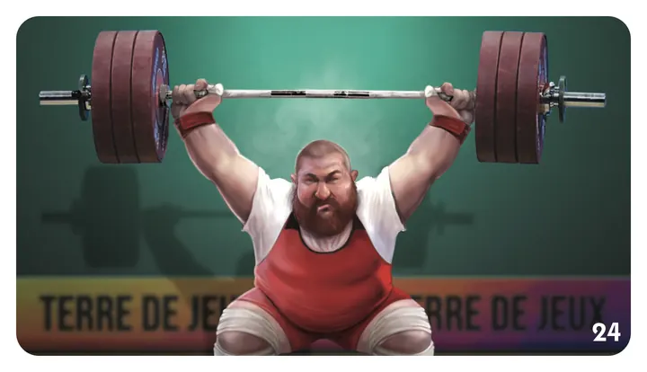
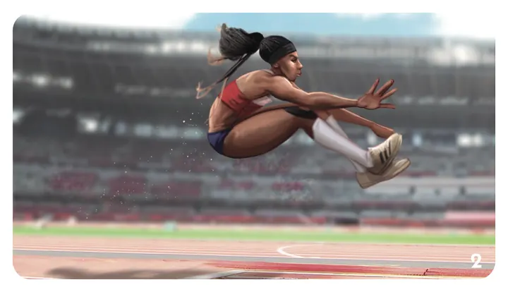
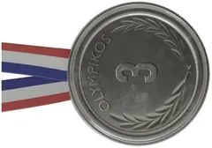
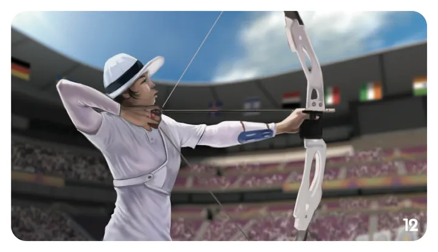
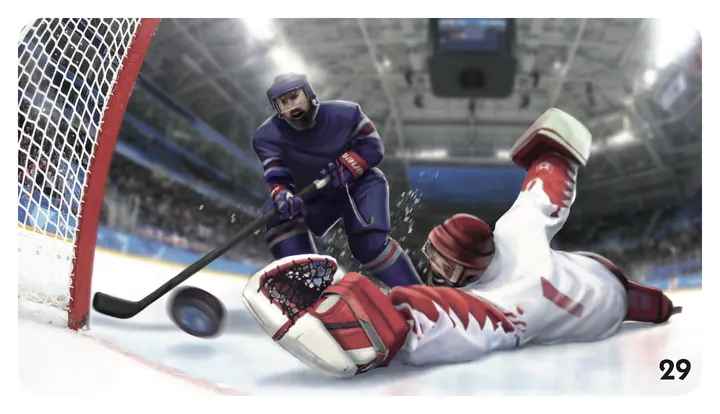
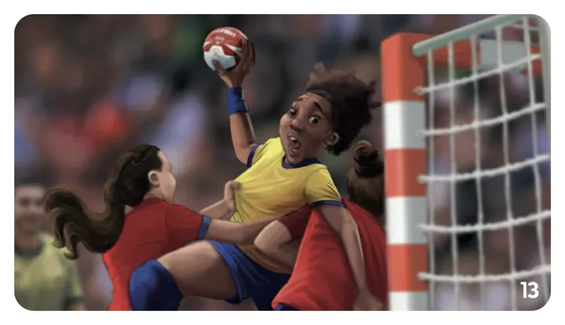
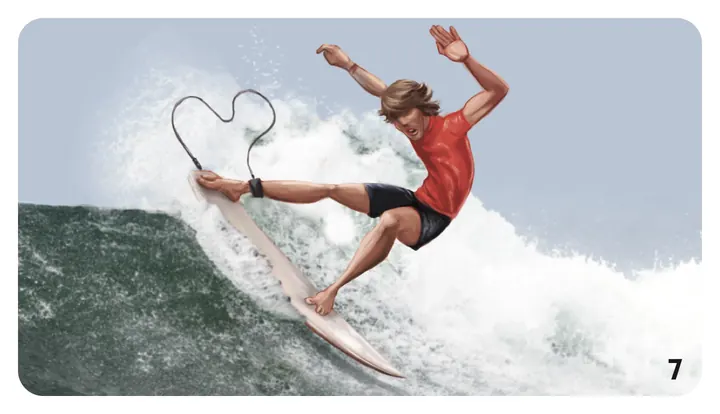
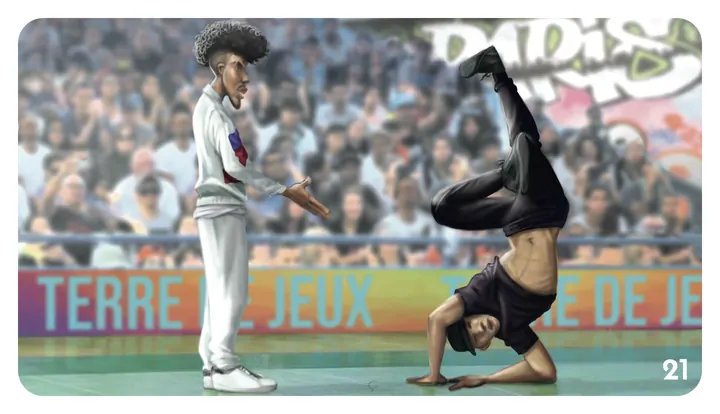
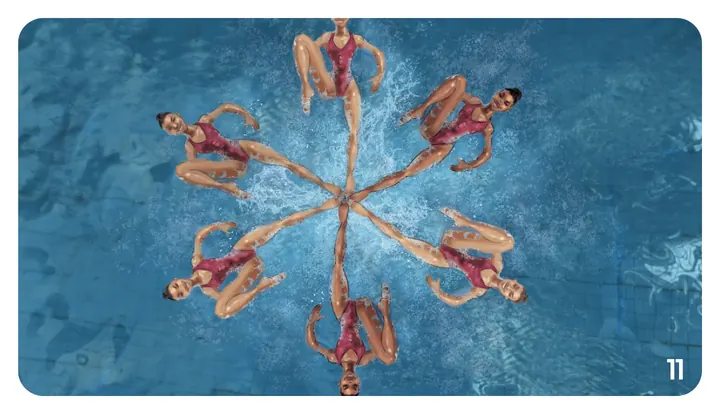

Asociación de ideas · velocidad
Olympikos
¿Quién no soñó con unos Juegos Olímpicos? Adiviná el deporte antes que nadie y subite al podio.
- En la mesa: 2–6 jugadores
- 20 min
- Complejidad: Muy fácil
¿Qué tipo de juego es?
Complejidad · Muy fácil
Jugar ahora
Las cuatro cajas van girando. Tocá la que quieras: abajo vas a ver qué tipo de juego es y vas a poder jugar una partida acá mismo, solo, de a dos en la misma pantalla o en línea, cada uno desde su casa.
Tocá una caja para elegir el juego.
Asociación de ideas · velocidad
¿Quién no soñó con unos Juegos Olímpicos? Adiviná el deporte antes que nadie y subite al podio.
¿Qué tipo de juego es?
Deducción · el Autor no habla
París, 1889. El Autor conoce el secreto de Gustave Eiffel, pero no puede decir una palabra.
¿Qué tipo de juego es?
Deducción cooperativa
¿Junto a quién creó Belgrano la bandera? Descubrilo en equipo antes de que se acaben los turnos.
¿Qué tipo de juego es?
Próximamente · Secret Stories
Año 2080. Todos dicen su código en voz alta, pero nadie sabe cuánto acertaron los demás.
¿Qué tipo de juego es?
Cada uno en su casa: creá una sala y mandale el link a quien quieras. Los dos ven la misma partida en tiempo real.
Olympikos
La web es el Entrenador y dejó un indicio en cada medalla. Cada 10 segundos una delegación rival juega una carta. De a dos, cada Atleta toca sus propios aros: el primero que acierta se lleva la medalla.

Aro 1 · Halterofilia Aro 2 · Esgrima en silla de ruedas
Aro 2 · Esgrima en silla de ruedas
Aro 3 · Salto en largo Aro 4 · Patinaje de velocidad
Aro 4 · Patinaje de velocidad Aro 5 · Rugby
Aro 5 · Rugby
Bronce2 puntos



Plata3 puntos


Oro4 puntos


Aro 1 · Tiro con arco
Aro 2 · Hockey sobre hielo
Aro 3 · Handball Aro 4 · Boccia
Aro 4 · Boccia
Aro 5 · SurfBronce2 puntos

Plata3 puntos

Oro4 puntos


Aro 1 · Breaking Aro 2 · Salto en alto
Aro 2 · Salto en alto Aro 3 · Bobsleigh
Aro 3 · Bobsleigh Aro 4 · Canotaje slalom
Aro 4 · Canotaje slalom
Aro 5 · Natación artísticaBronce2 puntos

Plata3 puntos

Oro4 puntos

En el juego, el Entrenador cambia en cada ronda y salen cinco deportes nuevos.
Les Secrets de la Tour Eiffel
El Autor dejó una carta al lado de cada fila. De a dos, cada Lector dice su código por turno y el Autor contesta en voz alta cuántas cifras acertó. El primero que descifra el código gana junto al Autor.
1812
Autor y Lectores juegan en equipo. De a dos, se turnan para decidir el código de cada turno y el sobre dice cuántas cifras acertaron. Si lo descifran antes de que se acaben los turnos, ganan todos.
2080
Como en Les Secrets de la Tour Eiffel, pero cada Lector dice su código en voz alta y el Autor le contesta en secreto. De a dos, pasen la pantalla: cada uno ve solo sus aciertos.